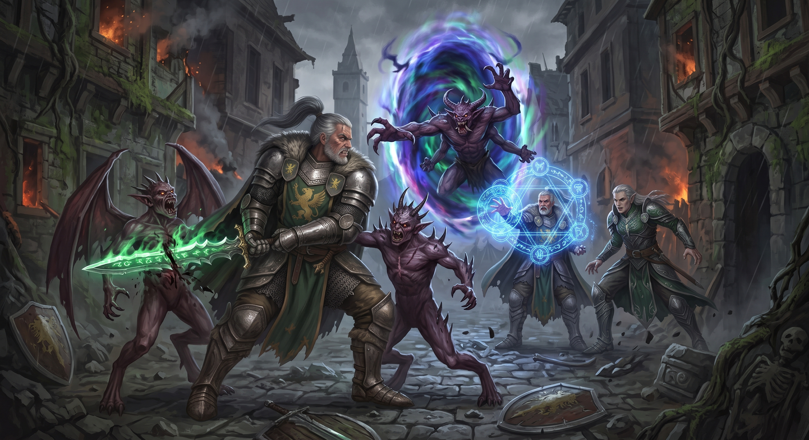
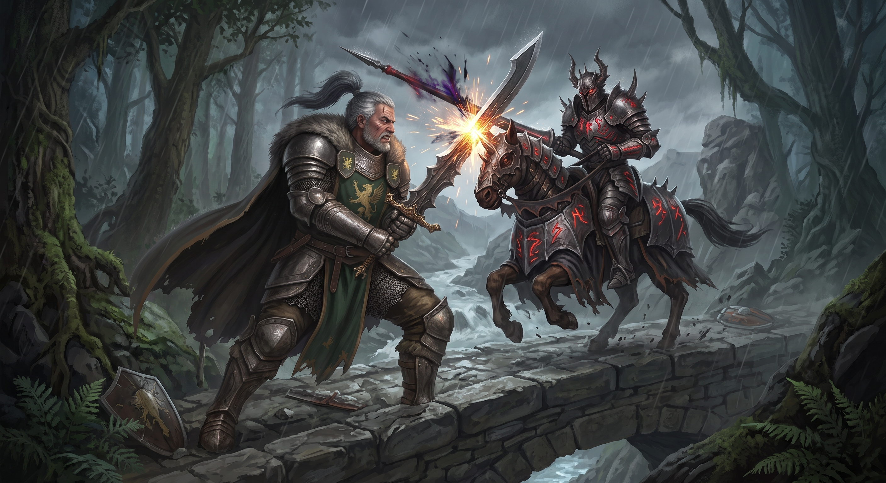
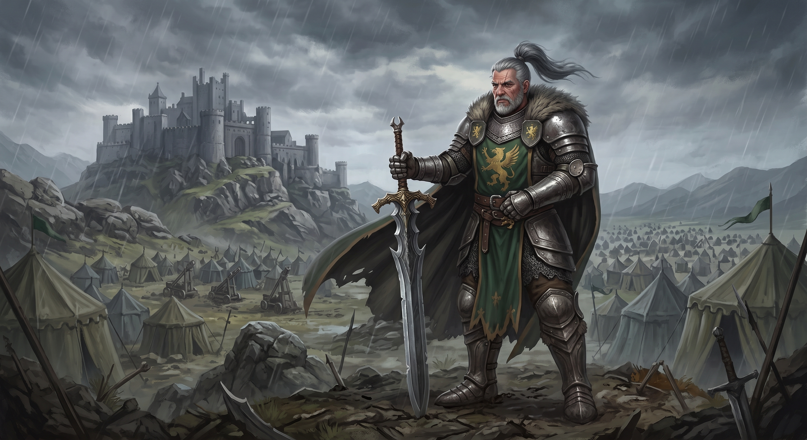
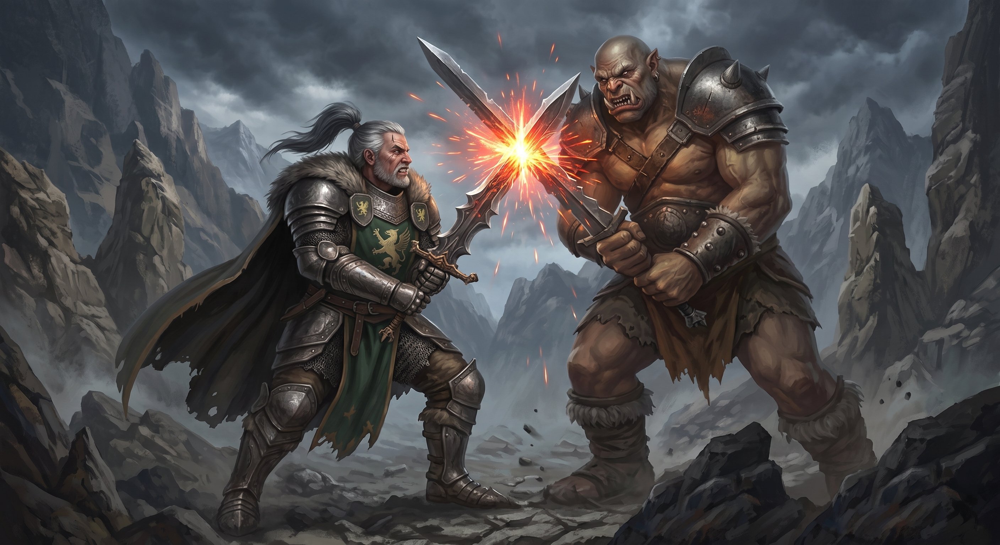
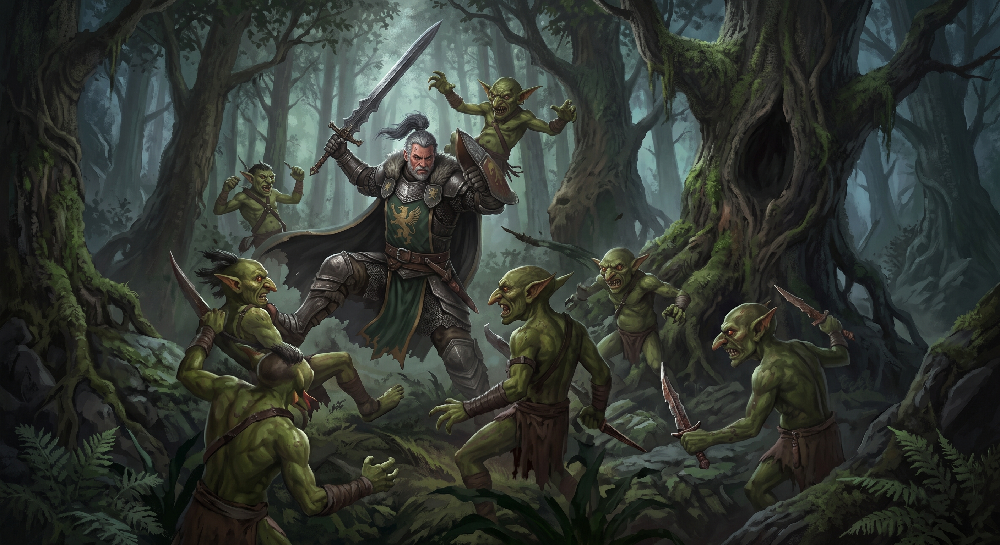
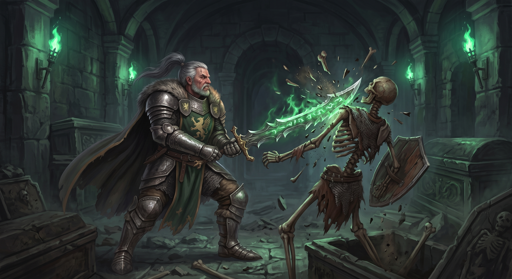
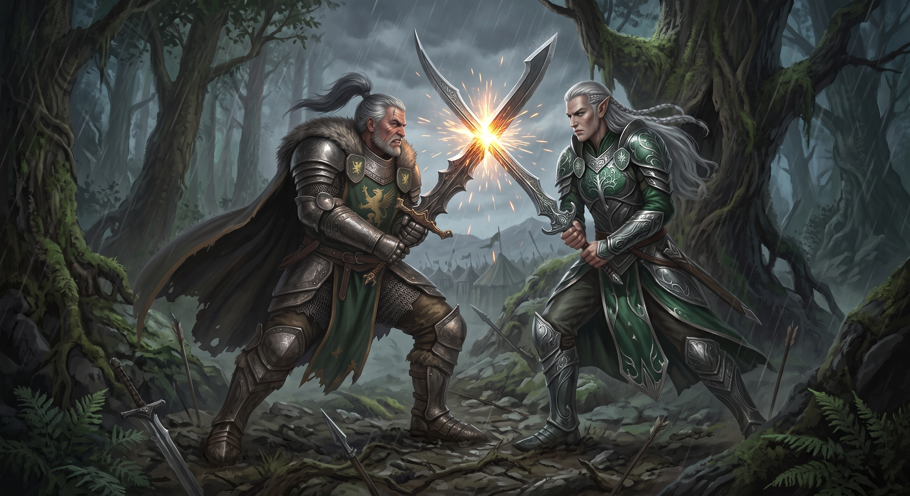

Sobre o Herói
Antes de se tornar uma lenda sussurrada com temor nos campos de batalha, ele era conhecido apenas como um soldado disciplinado em um reino há muito esquecido. Durante o cerco final de sua cidade natal, vendo todos os seus companheiros caírem perante um exército esmagador, ele violou o túmulo sagrado de uma antiga ordem de cavaleiros para empunhar a Lâmina do Vazio — uma espada curva gravada com runas famintas que se alimentavam da própria existência.
Ao tocar a empunhadura, as runas despertaram, fundindo-se à sua carne e cobrindo seu braço com marcas luminosas e dolorosas. Ele massacrou o exército inimigo sozinho naquela noite, mas o preço pago foi devastador: a espada consumiu suas memórias, suas emoções terrenas e o próprio nome de sua linhagem. Desde então, Bronkyu perambula como uma figura enigmática e sem pátria. A magia que corre em sua arma curva cria um ciclo implacável: a cada gota de sangue derramada de um oponente, a lâmina drena a força vital do alvo e a injeta diretamente nas veias de Bronkyu.
As runas na sua lâmina exigem um fluxo constante de energia para não começarem a devorar sua própria alma. Silencioso e focado, o Guerreiro Rúnico vaga pelo mundo em busca dos oponentes mais poderosos, sabendo que cada duelo é apenas mais uma trégua temporária contra a fome insaciável de sua espada.
Atributos e Habilidades
Conheça os atributos e habilidades de Bronkyu, exibidos na tabela abaixo:
| Atributos/Habilidades | Potência (1 a 5) | Dano ao adversário (%) |
|---|---|---|
| Ataque com a espada | 5,0 | 90 |
| Chute | 4,5 | 80 |
| Joelhada/Cabeçada | 4,0 | 65 |
| Rasteira | 3,5 | 70 |
Além disso, o personagem apresenta características exclusivas que o fazem ter vantagem em batalhas, como:
Capacidades Físicas
- Vitalidade regenerativa;
- Força devastadora;
- Domínio de manejo (capacidade de empunhar espadas e objetos de luta);
- Reflexos apurados;
- Resistência à fadiga.
Capacidades Psicológicas
- Foco inabalável;
- Apatia a feitiços;
- Extinto de sobrevivência;
- Presença intimadora silenciosa;
- Ambição exagerada.
Inventário e Conquistas
Inventário
Lâmina do Vazio
Armadura do Reino Esquecido
Manto de Linho Terroso
Pingente do Brasão Fragmentado
Espada curva ancestral com gravuras rúnicas que brilham em verde espectral. Drena a força vital dos oponentes a cada corte e a converte em poder físico.
Placas de aço temperado. Apresenta o brasão do grifo gravado no peito, vestígio da ordem à qual ele pertencia.
Capa pesada e puída, usada para cobrir o brilho involuntário das runas quando Bronkyu viaja à noite ou entra em povoados.
Fragmento de metal de sua antiga cidade natal. Embora ele não se lembre da própria história (devido a um dos processos de perda de memória), relatos afirmam que Bronkyu mantém o objeto preso ao cinto por puro instinto.
Conquistas
Na tabela abaixo, é possível verificar as conquistas do guerreiro, bem como um breve resumo do acontecimento e a data estimada.
**as datas são estimadas devido a falta de veracidade em relação ao exato ano dos acontecimentos.
| Conquista | Ano (estimativa) | Resumo |
|---|---|---|
| O Primeiro Fragmento | 1899-1902 | Despertou a Lâmina do Vácuo na cripta ancestral e sobreviveu ao ritual de vinculação rúnica |
| Carrasco de Dragões | 1905-1906 | Fez a espada absorver a força de um dragão ancestral, aumentando permanentemente a densidade de sua musculatur |
| Mente Inviolável | 1953-1962 | Resistiu a um feitiço de dominação mental lançado por um arquimago, usando o vazio de suas próprias memórias como escudo |
| Banquete de Runas | 1985-1990 | Manteve o brilho máximo das runas da lâmina ativo por mais de 3 horas ininterruptas em um único confronto de grande escala |
| Muralha de um homem só | 2000-2001 | Defendeu sozinho a ponte de um vale contra uma cavalaria inteira durante uma tempestade |
Galeria de Fotos

Imagem 1: Bronkyu em uma batalha pelo reino de Reindezan, lutando contra bruxos e aliens.

Imagem 2: Bronkyu lutando contra o cavaleiro Spingertew, na Floresta de Askaban.

Imagem 3: Bronkyu em frente ao reino de Jungles, após conquistar um acampamento de soldados elfos.

Imagem 4: Luta entre Bronkyu e o ogro da Floresta Negra, detentor do diamante azul do Reino Trombeta.

Imagem 5: Batalha de Honkswire, onde Bronkyu derrotou, sozinho, 437 duentes (arqueiros) verdes.

Imagem 6: Golpe fatal da espada de Bronkyu sobre um esqueleto, guarda do castelo real de Burghmore.

Imagem 7: Maior duelo (até agora e já registrado) da vida de Bronkyu, contra o maior feitiçeiro e rei de Alexville, John Galme.
Contato com a Guilda
Como posso entrar em contato com o criador do site?
Muito prazer, sou Guilherme Orguem Lima, 18 anos, estudante do segundo semestre de Engenharia da Computação, na Universidade Santa Cecília, e abaixo deixei alguns meios de comunicação para entrarem em contato.
- Telefone: (13) 98877-8557
- E-mail: guilherme.orguem@gmail.com
- Linkedin: Página Linkedin